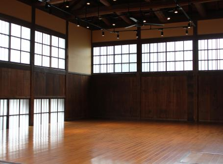
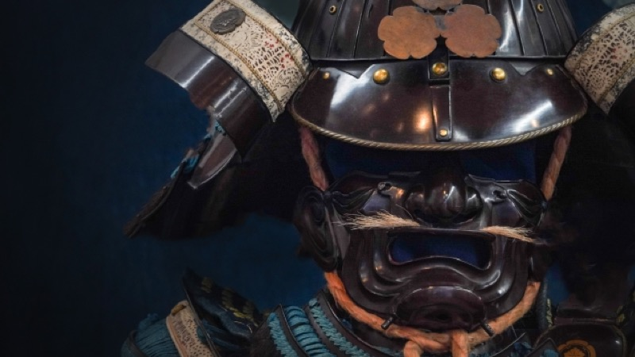
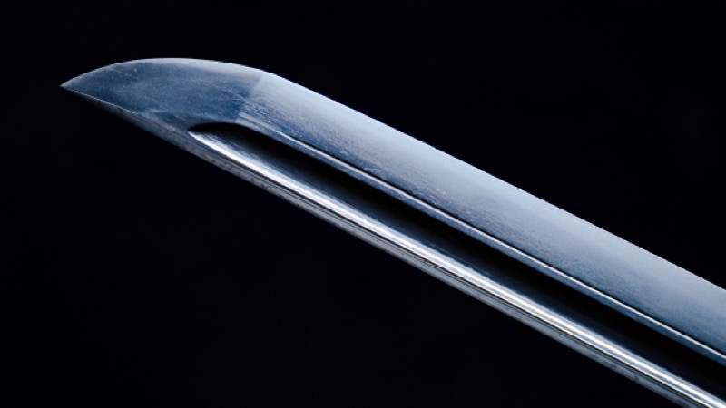
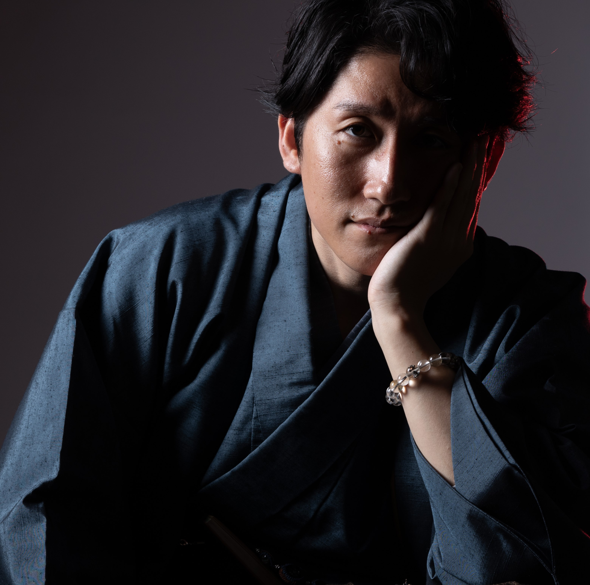
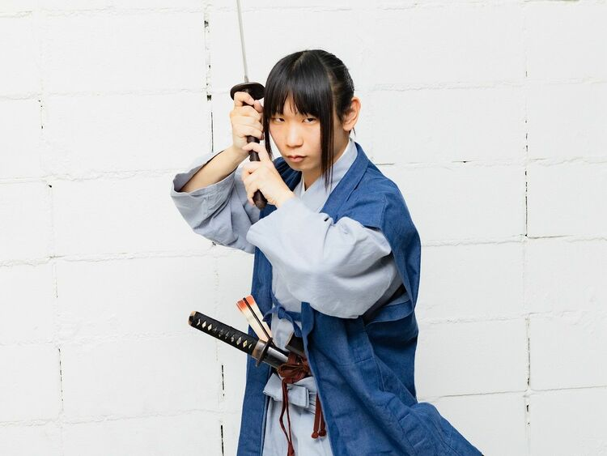
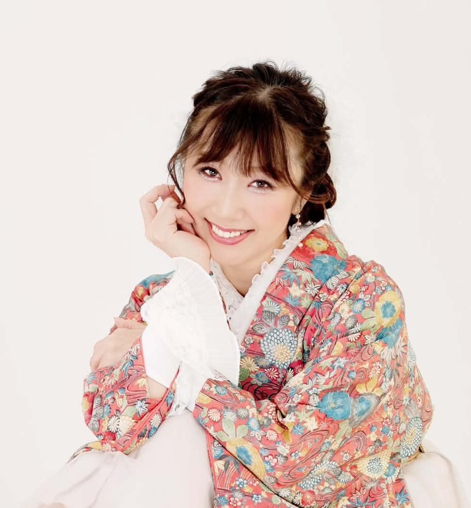

本物を見て、受け継がれた物語を聴く。
甲冑、火縄銃、日本刀、槍、弓。
本物の武具を間近で見て、その来歴と物語を聴く一日限定イベント。
2026年11月23日（月・祝）
掛川城公園 竹の丸 （静岡県掛川市）
本物の武具を見て、その歴史と物語を知る一日。
甲冑、火縄銃、日本刀、槍、弓。
武具は、かつて戦いの場で使われた道具であると同時に、その時代の技術や美意識、人々の考え方を今に伝える貴重な文化でもあります。
本イベント「武具の魅力」では、実物の武具を間近でご覧いただける展示と、武具を所有する人、古武術を実践する人、歴史や城を探究する人によるトークセッションを開催します。
武具は、どのようにつくられ、どのように使われていたのか。
なぜ長い年月を越えて、現在まで大切に受け継がれてきたのか。
実物を見ながら、それぞれの立場から語られる話を聞くことで、見た目だけでは分からない武具の背景や魅力を知ることができます。
武具や歴史に詳しい方はもちろん、これまであまり触れる機会がなかった方にも楽しんでいただける内容です。
会場は、掛川城の城下町に残る歴史的建築「竹の丸」。
歴史を感じる空間の中で、本物の武具と、そこに受け継がれてきた物語に触れてみませんか。

会場：掛川市有形文化財「竹の丸」ギャラリー
武具に詳しい方はもちろん、これまで本物の武具を見る機会がなかった方にも、その魅力を分かりやすくお伝えします。

甲冑、火縄銃、日本刀など、実物の武具を展示します。
写真や映像では分かりにくい大きさや重厚感、細かな装飾、長い年月を経た質感を、ぜひ間近でご覧ください。
一つひとつの武具が持つ違いや、当時の職人による技術にも触れていただけます。

武具を所有し、守り伝えている所蔵者。
古武術を通して、武具の使い方や身体の動きを探究する古武術家。
城や歴史を若い世代の視点から発信する探究者。
それぞれの立場から、武具がどのようにつくられ、使われ、現在まで受け継がれてきたのかを語ります。
専門知識がなくても楽しめるよう、実物を見ながら分かりやすくひもといていきます。
会場となる「竹の丸」は、掛川城の城下町に残る歴史的な近代和風建築です。
木のぬくもりや、当時の面影が残る空間の中で武具を見ることで、通常の展示施設とは異なる、特別な時間をお楽しみいただけます。
武具だけでなく、会場の建築や雰囲気も、本イベントの見どころの一つです。
所蔵者、古武術の演者、城と歴史の探究者。
異なる3つの視点に、司会の小川さなえ氏を交え、武具の魅力と物語を分かりやすく紐解きます。

火縄銃を、競技・古武術・文化継承の現場から語る
1990年生まれ、静岡県出身。
火縄銃射撃の競技者として全日本選手権で優勝。古武術「森重流砲術」を学び、日本武道館をはじめとする各地の舞台で演武を行っています。
また、日本の伝統技術を用いたアクセサリーや工芸品を取り扱う「伝統屋 暁」を運営。日本刀の販売・リースや甲冑の販売、伝統文化に関する展示やイベントの企画など、さまざまな形で日本の伝統技術と文化を現代へ伝える活動に取り組んでいます。
当日は、火縄銃を実際に撃つ競技者としての視点、古武術として受け継ぐ演武者としての視点、そして日本刀や甲冑の販売・展示に携わる立場から、その構造や扱い方、職人の技術、武具を未来へ受け継いでいく意味について語ります。
【主な領域】
火縄銃射撃、森重流砲術、日本刀、甲冑、伝統文化の継承

古武術の実践を通して、刀剣と装束の魅力を伝える
古武術「天心流兵法」の代範として、刀剣や装束を用いた演武を行い、日本の武術文化を伝える活動を続けています。
幼い頃から日本文化を愛し、古武術の実践に加え、メイド抜刀演武など、独自の表現を通して武術文化の魅力を幅広く発信しています。
当日は、刀剣や装束を実際に扱う立場から、武具と身体の動きの関係や、武具がどのように使われていたのか、外見だけでは分からない武術の考え方について紹介します。
【主な領域】
刀剣、天心流兵法、装束、甲冑
城と戦国史から、武具が使われた時代を読み解く
2009年生まれ。
幼い頃から城と歴史に関心を持ち、テレビ朝日の番組『サンドウィッチマン＆芦田愛菜の博士ちゃん』に、「戦国プリンセス博士ちゃん」としてたびたび出演しています。
これまでに200以上の城を巡り、特に石垣への深い関心と知識を持ちながら、城郭や戦国時代について探究を続けています。
当日は、城や戦国史の視点から、武具が使われた時代や戦いの背景に迫ります。また、来場者に近い立場から素朴な疑問を投げかけ、佐野翔平とまーこが持つ専門的な知識や経験を、初めて武具に触れる方にも分かりやすく掘り下げます。
【主な領域】
城郭、石垣、戦国史、歴史文化の発信

歴女なフリーアナウンサー、大河ドラマオタク女子
道路交通情報センターのアナウンサーとして10年間、テレビ・ラジオ出演や各種イベント・式典の司会を務める。現在は、歴史をテーマにした講演やトークショーへの出演、歴史コンテンツの企画・プロデュース、地域ブランディングなどを通して、歴史の魅力を幅広い世代へ伝えている。NHK大河ドラマゆかりの地域では、PR大使や応援隊としても活動。
当日は司会として、武具や歴史に詳しい方はもちろん、「大河ドラマは好きだけど武具はよく分からない」という方にも寄り添いながら、来場者目線の素朴な疑問を交え、出演者それぞれの専門的な知識や経験を分かりやすく引き出します。
【主な領域】
大河ドラマ、日本史(近現代以外)、日本神話、歴史コンテンツプロデュース、歴史講演、イベントMC
武具の展示は、11:00から16:00まで無料でご覧いただけます。
13:00からは、事前申込制のトークセッションを開催します。
甲冑、火縄銃、日本刀など、本物の武具を間近でご覧いただけます。
展示のみの観覧は無料で、事前予約も必要ありません。
会場内では、それぞれの武具が持つ特徴や、細部に残された職人の技術をお楽しみください。
佐野翔平、まーこ、諸星天音に加え、司会として小川さなえを迎え、それぞれの経験や専門分野をもとに、武具の構造や使われ方、時代背景、受け継がれてきた物語について語ります。
専門的な内容も、初めて武具に触れる方に分かりやすくひもといていきます。
※有料・事前申込制
※VIP席・通常席ともに定員があります
トークセッション終了後も、引き続き武具の展示をご覧いただけます。
展示を改めてじっくり見ながら、出演者との歓談や記念撮影など、自由にお過ごしください。
武具の展示および観覧を終了します。
明治36（1903）年、掛川の豪商である松本家によって建てられた近代和風住宅です。有形文化財に指定されており、木のぬくもりや明治の風情が色濃く残る落ち着いた和の空間です。
本イベントは、竹の丸館内にある「ギャラリー」にて開催します。
当日の受付も、ギャラリーにて行います。
所在地:
〒436-0079 静岡県掛川市掛川1200-1
アクセス（徒歩）:
JR掛川駅北口より徒歩約12分
駐車場について:
専用駐車場はございません。
お車でご来場の際は、近隣の有料駐車場（「掛川大手門駐車場」徒歩約5分 など）をご利用ください。
バリアフリーについて:
有形文化財保護のため、館内では靴をお脱ぎいただきます。
一部に段差や狭い階段がございますので、介助が必要な場合は事前にお問い合わせください。
武具の展示は、11:00から16:00まで、無料・予約不要でご覧いただけます。
13:00から開催するトークセッションの観覧には、事前にチケットのお申し込みが必要です。
11:00～16:00
無料・予約不要
13:00～14:30
有料・事前申込制／全40席
出演者に最も近い最前列から、トークセッションをご覧いただける、10席限定のお席です。
出演者の表情や声の抑揚、紹介される武具を近い距離で感じながら、会場内で最も臨場感のある時間をお楽しみいただけます。
会場内の通常席から、トークセッションをご覧いただけます。
火縄銃射撃、古武術、城や戦国史など、それぞれ異なる経験を持つ出演者が、武具の使われ方や時代背景、受け継がれてきた物語について分かりやすく語ります。
武具に詳しい方はもちろん、初めて本物の武具に触れる方にもお楽しみいただける内容です。
ご希望の券種を選び、必要事項をご入力のうえ、フォームを送信してください。
フォーム送信後に届く自動返信メールにて、振込先をご案内します。
メールの内容をご確認のうえ、指定された期日までにチケット代金をお振り込みください。
ご入金を確認後、受付完了メールをお送りします。
当日は、受付完了メールを確認できる状態で会場へお越しください。
はい、表示されている価格（VIP席：13,000円、通常席：4,800円）はすべて消費税込みの価格となっております。
1. お申込みボタンよりフォームに必要事項を入力して送信します。
2. 送信完了後、ご案内メールでお振込先口座（銀行振込）をお送りいたします。
3. お申込みから7日以内に指定口座へお振込みをお願いいたします。※期日までにご入金がない場合は仮予約が自動キャンセルとなります。
4. ご入金確認後、主催者より「ご予約完了・参加確認メール」をお送りします。当日は受付にてこちらのメールをご提示ください。
子ども料金の設定はございません。トークセッションの内容は中学生以上を推奨しておりますが、未就学児・小学生のお子様も同伴でのご参加は可能です。ただし、他のお客様の静かな観覧環境へのご配慮をお願いいたします。
はい、トークセッションの途中からでもご入場いただけます。受付スタッフがご案内いたしますので、安心してお越しください。
貴重な文化財や所蔵品保護のため、展示武具にお手を触れることは一律ご遠慮いただいております。何卒ご理解とご協力をお願いいたします。
展示品の静止画撮影、および撮影した写真のSNSへの投稿は歓迎しております。ただし、トークセッション中の動画撮影および録音は他のお客様のご迷惑となるため、ご遠慮いただいております。
お一人様のお申込みは、1回につき1席種・1名分のみとなります。VIP席と通常席を同時に購入される場合や、複数名分をまとめて購入される場合は、お手数ですが人数・席種ごとに分けて複数回お申し込みください。
限定40席の特別なトークショー。極上の歴史空間で皆様のお越しをお待ちしております。
主催：伝統屋 暁 / お問合せ：dentoya.akatsuki@gmail.com